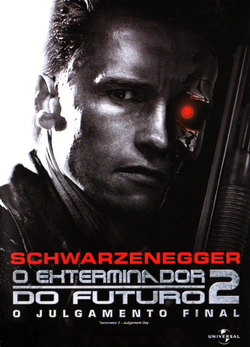
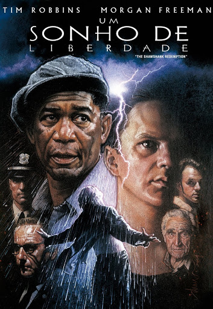
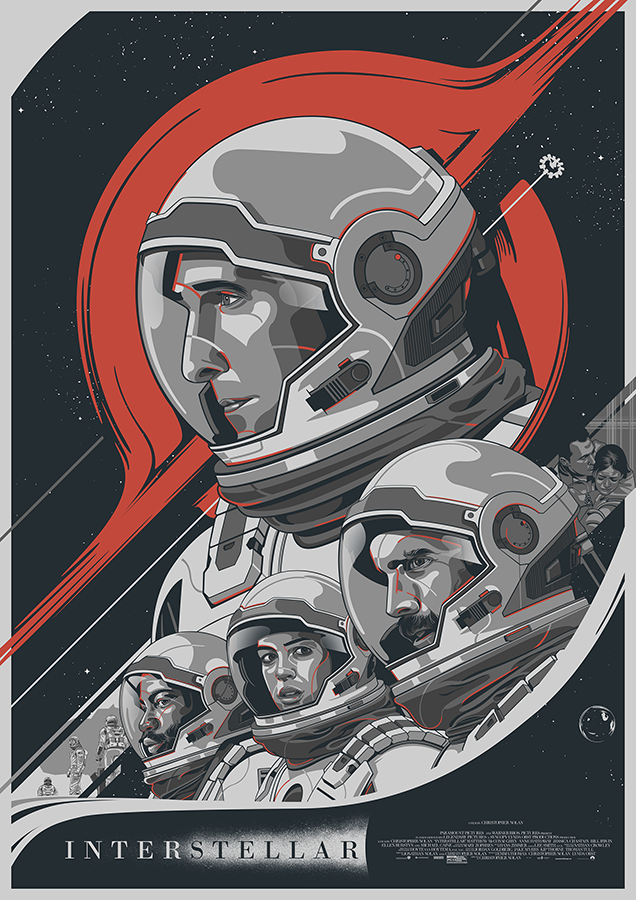
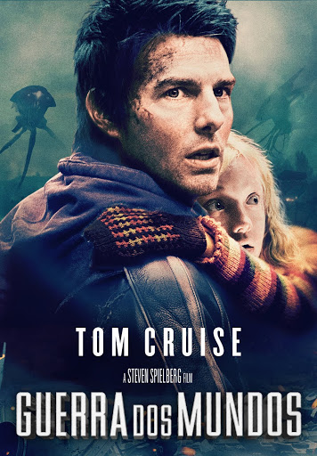
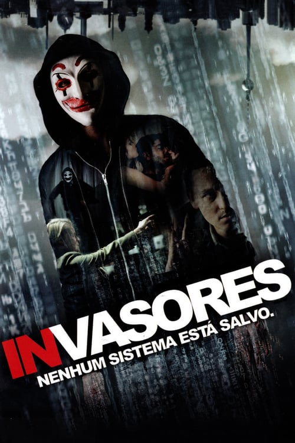

O Exterminador do futuro 2 - O julgamento final
O jovem John Connor é a chave para a vitória da civilização sobre uma rebelião de robôs do futuro. No entanto, ele torna-se alvo de T-1000, um exterminador que pode assumir a forma que desejar e que foi enviado do futuro para matá-lo. Outro exterminador, o renovado T-800, também é enviado de volta ao passado para proteger o menino. Quando John e sua mãe embarcam na fuga com T-800, o menino cria um vínculo forte e inesperado com o robô.
Matrix

Um jovem programador é atormentado por estranhos pesadelos nos quais sempre está conectado por cabos a um imenso sistema de computadores do futuro. À medida que o sonho se repete, ele começa a levantar dúvidas sobre a realidade. E quando encontra os misteriosos Morpheus e Trinity, ele descobre que é vítima do Matrix, um sistema inteligente e artificial que manipula a mente das pessoas e cria a ilusão de um mundo real enquanto usa os cérebros e corpos dos indivíduos para produzir energia.
Um Sonho de liberdade
Andy Dufresne é condenado a duas prisões perpétuas consecutivas pelas mortes de sua esposa e de seu amante. Porém, só Andy sabe que ele não cometeu os crimes. No presídio, durante dezenove anos, ele faz amizade com Red, sofre as brutalidades da vida na cadeia, se adapta, ajuda os carcereiros, etc.
Interestelar
As reservas naturais da Terra estão chegando ao fim e um grupo de astronautas recebe a missão de verificar possíveis planetas para receberem a população mundial, possibilitando a continuação da espécie. Cooper é chamado para liderar o grupo e aceita a missão sabendo que pode nunca mais ver os filhos. Ao lado de Brand, Jenkins e Doyle, ele seguirá em busca de um novo lar.
De Volta para o futuro

Marty McFly, um adolescente de uma pequena cidade californiana, é transportado para a década de 1950 quando a experiência do excêntrico cientista Doc Brown dá errado. Viajando no tempo em um carro modificado, Marty conhece versões jovens de seus pais e precisa fazer com que eles se apaixonem, ou então ele deixará de existir. Para complicar, Marty precisa voltar para casa a tempo de salvar o cientista.
O Regresso
Após ser atacado por um urso, o caçador Hugh Glass é abandonado na floresta por seu companheiro John Fitzgerald. Apesar de muito ferido, Glass consegue sobreviver e vai em busca de vingança.
Guerra dos mundos
Ray Ferrier é um estivador divorciado, afastado de seus filhos, que vivem com a mãe. Quando sua ex-esposa deixa as crianças para ele cuidar durante alguns dias, o planeta é atacado por alienígenas que surgem do chão conduzindo tripods e destruindo tudo que encontram pelo caminho. Ray tenta proteger os seus filhos e fugir para Boston para se juntar a sua ex-esposa. Durante o trajeto, enfrenta várias adversidades e ataques.
Invasores - Nenhum sistema está salvo
Benjamin, um jovem com grande conhecimento de computadores e redes, se junta a um subversivo grupo de hackers.